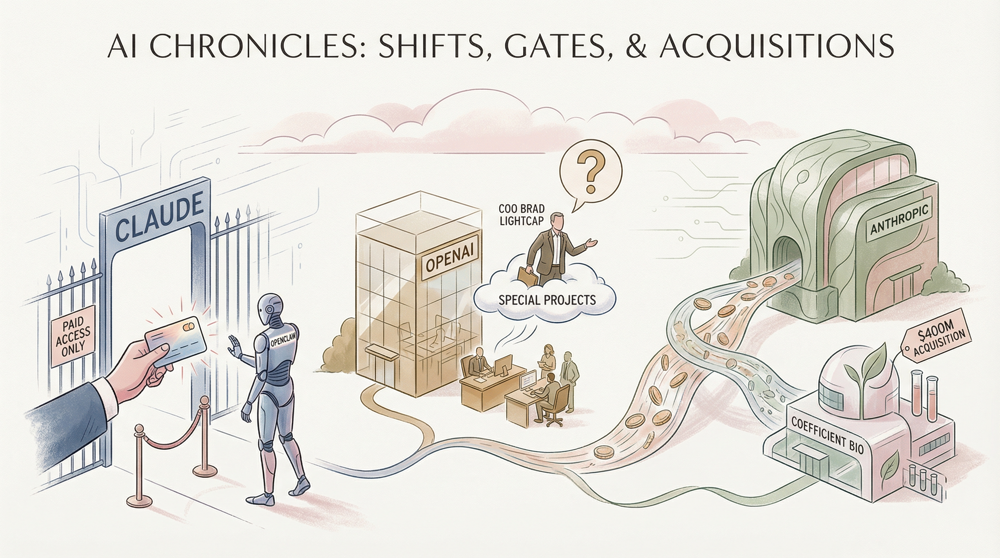

Anthropic禁止用户使用OpenClaw，Claude订阅者需额外付费
两克伴AIGC日报
2026-04-04 星期六

本期关注：Anthropic禁止OpenClaw并4亿美元收购生物公司，OpenAI高管调整，Meta因数据泄露暂停合作；同时Centel推出AI协作工具整合产品开发，GPT-IMAGE-2模型将上线，展现AI行业竞争加剧与技术融合趋势。
📰 行业动态
OpenAI高管变动，COO布拉德·莱特卡普将负责特殊项目
Anthropic以4亿美元收购生物技术初创公司Coefficient Bio
Meta因数据泄露暂停与Mercor的合作
🔥 今日焦点
Centel，一款由marcel-felix开发的AI协作工具，旨在为产品经理、开发者和AI代理提供一个共同规划与实施产品的平台。在过去，产品工作流程分散在多个工具中，而Centel的出现则将它们整合到一个单一的工作空间中，每个步骤都配有背景代理，极大提高了工作效率。
Centel的核心功能包括：一个协作异步功能规划器，适用于团队；以及背景编码代理，能够自动执行简单任务。开发者可以通过MCP（多任务处理中心）获取更复杂的任务。这一创新不仅简化了产品开发流程，还提高了团队协作效率。
近日，Reddit用户u/ThunderBeanage透露，一款名为GPT-IMAGE-2的AI模型即将在LMarena平台上线，其代号分别为maskingtape-alpha、gaffertape-alpha和packingtape-alpha。经过测试，该模型在性能上远超nano banana，令人惊叹。值得注意的是，当询问其所属机构时，GPT-IMAGE-2声称自己是OpenAI。这一消息引发了业界的广泛关注。
GPT-IMAGE-2的问世，标志着AI领域在图像生成技术方面取得了新的突破。作为一款基于深度学习的图像生成模型，GPT-IMAGE-2有望在图像处理、计算机视觉等领域发挥重要作用。其出色的性能和潜在的应用前景，使得GPT-IMAGE-2成为AI从业者和研究者关注的焦点。
Gemini AI近期推出的Gemma 4 31b模型展现出极高的成本效益，成为业界关注的焦点。根据Reddit用户u/tobias_681的报道，该模型在人工分析中表现出色，尤其在成本效益方面优于Qwen模型。尽管在整体性能上略逊一筹，但Gemma 4 31b在运行API处理非复杂任务时展现出极高的效率，尤其在不需要快速响应的情况下，其表现尤为突出。
这一发现对AI领域具有重要意义。首先，Gemma 4 31b的推出为AI模型提供了新的成本效益标准，有助于降低AI应用的成本，促进AI技术的普及。其次，该模型的高效性能为AI从业者提供了更多选择，有助于推动AI技术在各个领域的应用。最后，Gemma 4 31b的成功可能引发业界对AI模型成本效益的重新评估，推动AI行业向更加高效、可持续的方向发展。
📚 深度长文
本文探讨了作者为GTM Agent构建的自愈部署管道。文章核心观点在于，通过自动化检测回归、分类变更原因并自动触发修复，实现生产环境中AI代理的自我修复，无需人工干预直至审查阶段。作者详细阐述了该管道的构建过程，包括检测回归、分类变更原因以及自动触发修复的机制。文章突出了深度和独特见解，为AI从业者提供了宝贵的实践经验。阅读本文，读者可以了解如何构建高效的自愈部署管道，提高生产环境中AI代理的稳定性和可靠性。
---
本文深入探讨了前沿模型对漏洞研究领域的巨大影响。作者Thomas Ptacek预测，在接下来的几个月内，编码代理将彻底改变漏洞利用开发实践和经济学。他指出，前沿模型的改进将不再是一个渐进的过程，而是一次质的飞跃。大量具有高影响力的漏洞研究（甚至可能是大部分）将仅仅通过将代理指向源代码树并输入“找到零日漏洞”即可实现。
文章的核心观点在于，随着AI技术的发展，漏洞研究将迎来一场革命。Ptacek强调，未来漏洞研究将不再依赖传统的人工分析，而是通过AI代理自动发现和利用漏洞。这一转变不仅将极大地提高漏洞研究的效率，还将对整个安全产业产生深远影响。
本文深入探讨了2026年苹果公司在人工智能领域的战略布局。作者Ben Thompson从Formula 1赛事的独立运营出发，引申出苹果公司在未来50年的发展蓝图。文章核心观点在于，苹果公司正加速布局人工智能领域，以实现持续的创新和增长。关键论据包括苹果在安全、隐私保护方面的技术优势，以及其在人工智能领域的研发投入。阅读本文，读者不仅能了解苹果公司的未来发展方向，还能对人工智能在科技领域的应用趋势有更深刻的认识。文章深度和独特见解体现在对苹果公司战略的深入剖析，以及对人工智能技术发展趋势的前瞻性预测，适合AI从业者阅读。
🛠️ 产品推荐
Show HN：AI代理技能为联盟营销提供解决方案。该产品基于Markdown，可与任何大型语言模型（LLM）协同工作，助力用户高效开展联盟营销。通过集成AI技术，产品能够智能化处理营销任务，提升营销效果，解决传统营销方式效率低下、效果不佳的问题。对于技术从业者而言，该产品具备创新性的AI能力，是提升联盟营销效率的理想工具。
---
Show HN：一款针对欧盟法规的合规SaaS产品，售价4000美元。产品包括四大模块：CBAM OS（针对欧盟碳边界税合规）、AIA Proof（AI法案合规与AI检测）、AO France（AI驱动的法国公共招标响应）和AO Copilot（BTP招标分析，包含20个模块和1900+测试）。这些产品针对欧盟强制性法规，确保市场准入，采用现代技术栈（Next.js，Supabase），生产就绪。产品旨在帮助用户轻松应对欧盟法规，提高合规性，降低风险。
---
Show HN：Cursor扩展版，一款追踪LLM缓存TTL的插件。该插件旨在帮助用户实时监控语境缓存即将过期的情况，有效避免因忘记续聊或未及时审查计划而导致的金钱和语境损失。通过Cursor扩展版，用户可以更便捷地管理聊天和缓存，提高工作效率，减少错误。此插件为AI技术爱好者提供了一种创新的缓存管理解决方案。